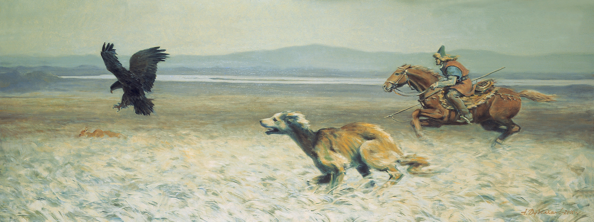
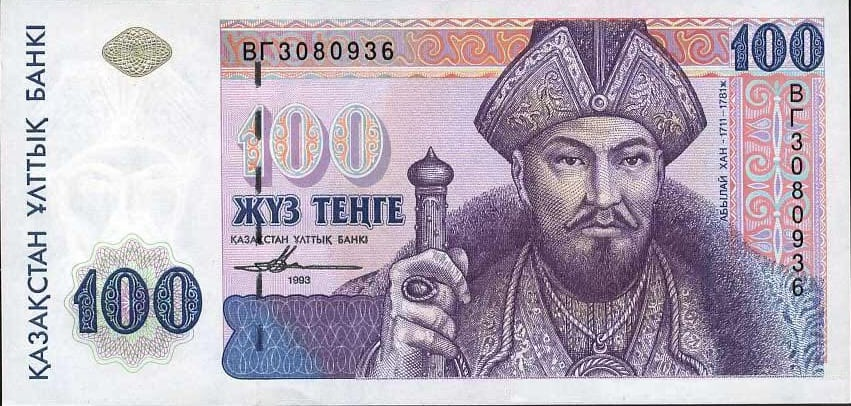

Клик — увеличить · колесо — зум · перетащить — двигать

Заслуженный деятель искусств Республики Казахстан, один из авторов дизайна национальной валюты — тенге. Лауреат Государственной премии РК.
Агимсалы Дузельханов — заслуженный деятель искусств Казахстана, профессор Казахской национальной академии искусств им. Т. Жургенова.
Родился в 1951 году в Казалинске. Окончил Алматинское художественное училище имени Н. В. Гоголя и Московский институт имени В. И. Сурикова. Работал в области исторической живописи, станковой графики, плаката и книжной иллюстрации; оформил свыше 300 книг и более 50 плакатов. В 1992 году участвовал в создании дизайна тенге; удостоен Государственной премии РК и ордена «Құрмет».
Творческую деятельность начал в 1975 году в издательствах «Өнер» и «Жалын». Член Союза художников СССР с 1985 года. Иллюстрировал школьные учебники нового поколения и написал учебные пособия по графике. В 2000 году вошёл в число 33 лучших художников мира на международной выставке-конкурсе ООН «Глобал Арт-2000» в Нью-Йорке.
Лауреат Государственной премии Республики Казахстан (2002), кавалер ордена «Құрмет» (2016). Его исторические полотна посвящены казахскому эпосу, тюркской цивилизации и культуре степи. Агимсалы Дузельханов ушёл из жизни 20 августа 2025 года — его наследие продолжает жить в искусстве Казахстана.
Историко-эпические полотна, графика и иллюстрация — отражение тюркской цивилизации, казахского эпоса и степной культуры.

В 1992 году Агимсалы Дузельханов вошёл в группу художников, которым доверили создать облик первой национальной валюты независимого Казахстана. Эскизы банкнот готовились в Алматы и дорабатывались вместе с британскими мастерами; первые тенге были введены в обращение в ноябре 1993 года. Так искусство художника оказалось в руках каждого казахстанца.
Он стал автором академических портретов выдающихся исторических личностей, запечатлённых на банкнотах. Эта работа требовала предельной точности: тончайшее перо, увеличительная лупа, нить за нитью — образ, достойный эпохи. Международные эксперты признали эти портреты образцом графического мастерства, а созданные им образы стали частью визуальной памяти независимого Казахстана.
«Өнер — ағып жатқан бұлақ, ақыл — жанып тұрған шырақ»
«Искусство — текущий родник, разум — горящий светильник»
За серию исторических полотен о Казахстане.
За значительный вклад в развитие изобразительного искусства Казахстана.
Указом Президента Республики Казахстан.
В числе 33 лучших художников из более чем 100 стран (ООН, Нью-Йорк).
А также премия «Лучшая книга» (Ташкент) и всесоюзные дипломы 1985–1987 годов.
Казахстан (Алматы, Астана) и Туркменистан (Ашхабад).
Для музеев, галерей, кураторов и исследователей. Напишите — и мы ответим в ближайшее время.